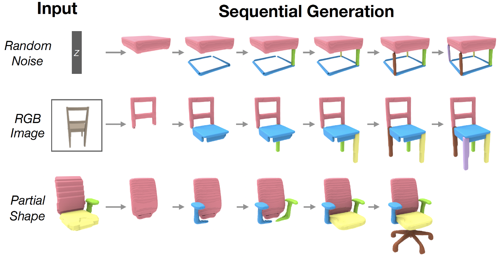
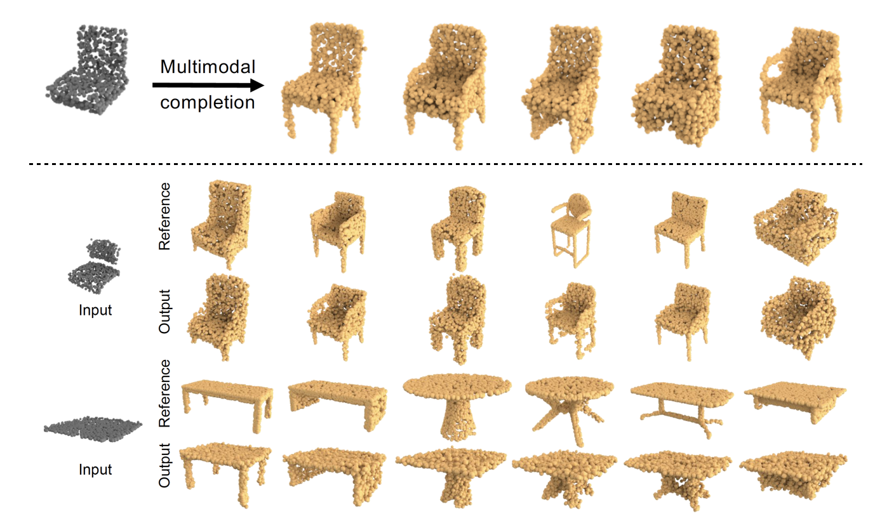

个人研究综述（可视计算和学习）
庄一新
三维可视信息是人类或机器人互相理解和交流以及和真实物理世界交互的的主要媒介。在当前大量的新兴应用领域中，如各类无人系统、混合现实和数字内容创作等，可视计算和学习技术起到越来越关键的支撑和推进作用。
本研究涵盖了可视计算和学习的多个热门领域，如几何深度学习、三维视觉以及传统几何建模和分析。总研究目标为理解三维对象的构造过程来进行三维建模和分析，以及探索二维视觉观测与三维物理世界之间的关联来辅助人与机器人或机器人之间的交互。近一年多，我们先后在三维生成任务中引入一些新的概念和思路，如序列化部件表征和多模态形体补全，来生成结构保持及几何多样的三维形体，同时我们引入了一些十分有挑战的应用场景，拓展了场景建模和图像定位问题的前沿研究，如提出了基于小样本观测的相机重定位问题以及面向持续变化场景的三维建模问题。后面三个章节将分别介绍了三个主要研究领域的研究目标和已取得的研究成果。
本项目重点研究了对象和场景的三维几何和结构等内在属性以及物体和相机位姿等外在属性，未来我们将集成纹理、材质和光照等更多内在属性，进行全要素的三维重建以及面向虚拟化现实的对象和场景生成。其他未来研究还包括运用深度学习工具对传统纯几何问题进行改造，寻找高效、鲁棒的解决方案。例如许多几何优化问题中，传统的启发式策略以及优化求解可以通过表达能力更强的深度网络来自动学习和拟合。此外，许多传统问题本质上还存在着不确定性或歧义性，输出目标蕴含多种可能性，这些特性普遍存在于真实世界当中，相对于传统的确定性方法，基于数据分布建模的深度模型在这类问题上更具优势。
总而言之，可视计算和学习正在重塑人们交流、娱乐以及工业制造等领域。类似于许多成功的VR、AR和数字内容创作等应用产品，我们的最终目标是打造软硬件结合的产品，将我们的可视计算和学习算法融入其中，逐渐提高产品的智能水平和易用性，更好的服务人们的日常生活和生产任务。
一、几何深度学习 (2019-2020)
本课题在几何深度学习领域的主要研究是理解三维形体的构建过程来服务三维形体生成任务，获取高质量和多样化的三维几何。核心思想是建立三维几何和其他模态的内在联系，包括自然语言和文本、图像和视频以及草图绘画等模态。通过更加低维度、更抽象的模态进行三维内容的原型设计，借助多模态数据中蕴含的模态关联信息，以及建立设计空间到实物空间之间的映射，来生成符合原型设计、结构准确、细节丰富的几何形体。我们首先尝试通过类似于文本中句子的形式来表征形体，利用RNN网络来合成三维内容。同时，我们第一次运用条件生成网络对过程式建模和形体补全任务中的形体尚未完成区域或缺失区域进行数据分布建模，为每个未完成的形体提供多种补集方案，组成完整、真实且多样化的形体。更多关于形体抽象设计与设计空间到三维实体空间的映射学习正在进行中。∗此研究来源于国家自然科学基金青年项目（项目号：61902007；项目名称：高分辨率和结构保持的深度几何模型表达与生成），庄一新为项目负责人。
|  |
PQ-NET: A Generative Part Seq2Seq Network for 3D Shapes
CVPR 2020, 通讯作者 核心思路: 我们提出一种深度神经网络，通过逐个部件组装的方式来生成三维形体。这种部件序列化的形体表征方式类似于自然语言中的句子形式，非常恰当地描述了三维形体的构造过程。该想法主要来源于Biederman的经典论述，既recognition-by-components (RBC)，也就是说语言构造与形体感知之间有着本质上的相似性。我们采用类似于NPL翻译中常用的RNN网络，理解和学习PartNet数据集内三维形体的部件组装规律，并用于生成部件、部件关系及整体部件组装过程。 |
|  |
Multimodal Shape Completion via Conditional Generative Adversarial Networks
ECCV 2020 (Spotlight), 通讯作者 核心思路: 交互式建模、过程式建模以及形体补全等问题需要预测半成品几何体中未完成的或者缺失的区域，并生成适当的补集来构造完整形体。已有基于深度生成网络的方法只提供一种补全结果，但是实际建模中，未知区域是不确定的，也不是唯一的。我们第一次提出对这种不确定性或者歧义性进行建模，为形体补全提供多种选择。我们设计条件对抗生成网络，从数据集中提取每个缺失形体的多样性补全结果。该方法不需要数据集提供每个补全对应的结果，而是通过非匹配的弱监督方式训练网络参数。 |
二、三维视觉 (2019-2020)
本课题关于三维视觉的研究主要集中在基于图像的三维场景重建和定位问题。核心内容在于通过非结构化或者时序化的二维颜色、深度图像为媒介，建立观测者、图像和真实世界之间的关联，来计算观测者的位姿和物理世界的三维几何信息。其主要难点在于观测数据数量小、质量低和环境持续变化等挑战，瓶颈在于终端的计算性能。因此，我们于近期提出若干个面向当前迫切需求和前沿应用的研究问题，如面向只有小样本场景图像的相机重定位问题、面向持续变化场景的渐进式三维建模问题以及一些和机器人相关的视觉感知和定位问题等。目前已在小样本定位问题上取得初步研究成果，持续变化场景的建模问题正在重点推进。这些研究将使许多使用消费级相机的场景受益，如使用移动手机和行车记录仪等场景，研究成果将在小样本和持续变化等条件下，提供建模和定位服务。∗此研究来源于国家重点研发计划项目（项目号：2019YFF0302902, 项目名称：冰雪项目交互式多维度观赛体验技术与系统），庄一新为子课题负责人。

|
Decoupling Features and Coordinates for Few-shot RGB Relocalization
arXiv preprint 2020, 通讯作者 核心思路: 相机重定位需要提供已知场景大量观测数据，并逐个场景进行训练，因而跨场景模型自适应具有非常大需求。最新的方法在小样本场景自适应中效果较差，主要原因在于将观测图像和世界坐标深度耦合，因而图像特征学习受具体场景影响较大，而为了得到较好预测效果，需要大量数据重新进行特征学习。我们解决此问题的思路来源于模仿人类重定位的过程，既视觉特征感知、世界坐标回归及位姿估计是分离的。因为物体在世界坐标系下的坐标与观测视角无关，我们在学习图像特征阶段屏蔽场景的坐标。通过如此解耦，学习到场景的通用特征，且新场景只需要提供小样本视角图像既可得到较好的逐像素坐标预测，最后位姿估计结果也比传统方法有两个数量级的提升。 |
三、几何建模和处理(2012-2016，博士课题)
本课题借助草图来研究几何建模和处理。草图是对象的最紧致几何表征之一，其通过简单的线画勾勒出对象的大体形态，并通过人类的视觉认知，推测出蕴含于线条背后的三维对象的复杂拓扑和几何细节。此研究的目的包括两个方面：一是从用户设计的自由草图出发，计算最接近用户设计意图的几何曲面；反之，另一方面则寻找对象表面几何的最有代表性的曲线网络。与基于深度学习的方法不同，这部分研究采用传统的研究框架，研究方案结合了低层级的微分几何计算和高层级的领域知识设计和策略优化。这部分研究完成于2012-2016年，为庄一新博士期间研究成果。
|
Feature-Aligned Segmentation using Correlation Clustering
Computational Visual Media 2017 (best paper honorable mentioned), 第一作者 核心思路: 我们提出一种基于面片表示的网格分割方法，能够自动生成和曲面显著特征对齐的分割线。核心思路在于将分割问题转化为关联聚类问题。关联聚类问题首先在数据挖掘领域被提出，与传统的基于聚类的网格分割方法相比，该方法最大优势是无参数的，不需要指定分割的类数。关联聚类的输入为带正负边的权重图，负权重边的构造可以通过特征线段自动检测或者用户交互式草图输入来控制，从而影响聚类细节。关联聚类求解代价非常高，我们提出一种加速的算法，在小于10万个顶点的网格上，能够达到实时且接近最优关联聚类的结果。与已有方法相比，我们得到的分割结果边缘与曲面特征更加对齐，非常适合纹理贴图、网格抽象等应用。 |